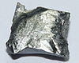

terbium

Definition: Terbium is a chemical element with the symbol Tb and atomic number 65. It is a silvery-white, rare earth metal that is malleable, and ductile. The ninth member of the lanthanide series, terbium is a fairly electropositive metal that reacts with water, evolving hydrogen gas. Terbium is never found in nature as a free element, but it is contained in many minerals, including cerite, gadolinite, monazite, xenotime and euxenite.
Source: Wikipedia
Wikipedia Page
Wikidata Page